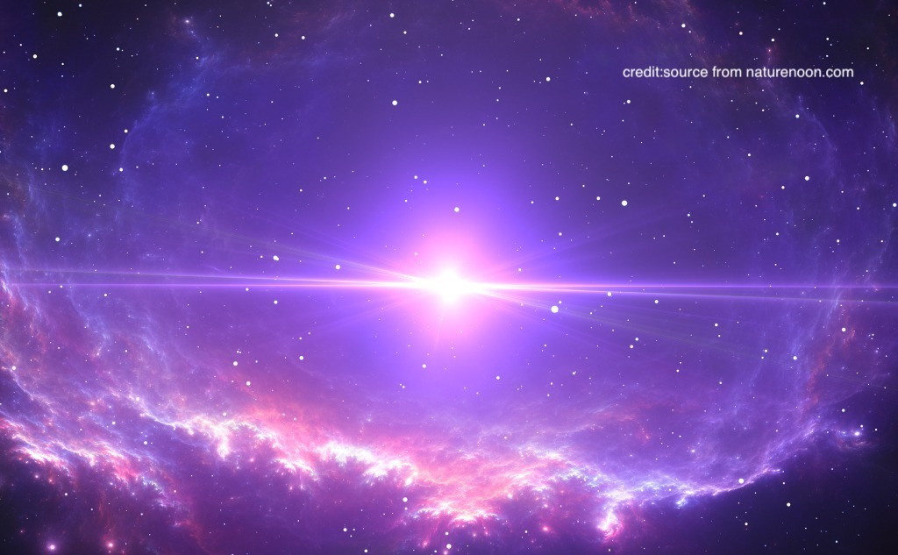
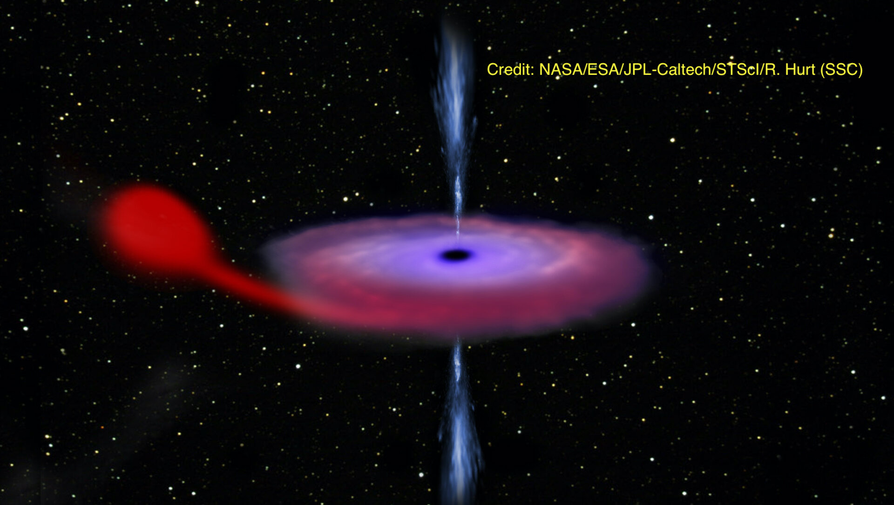
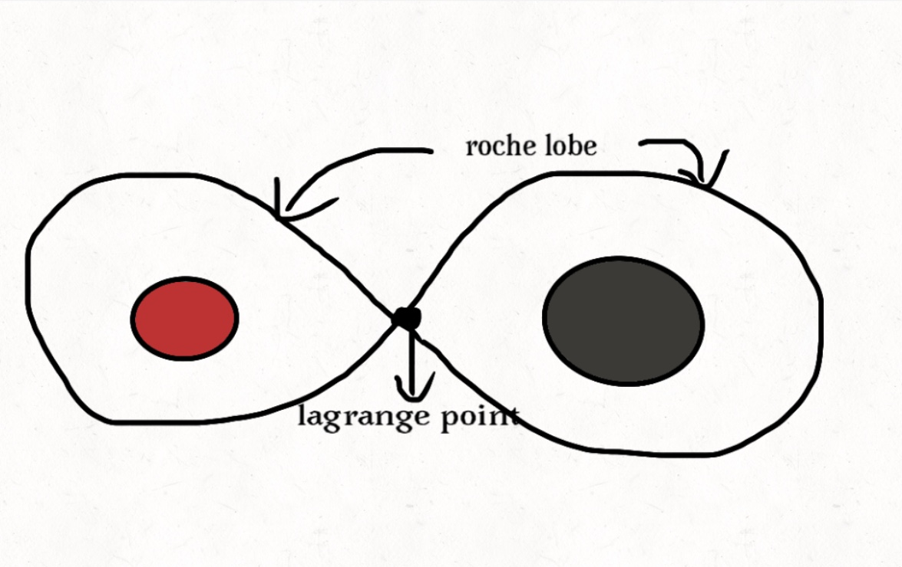
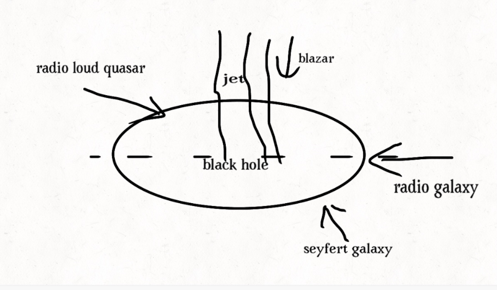
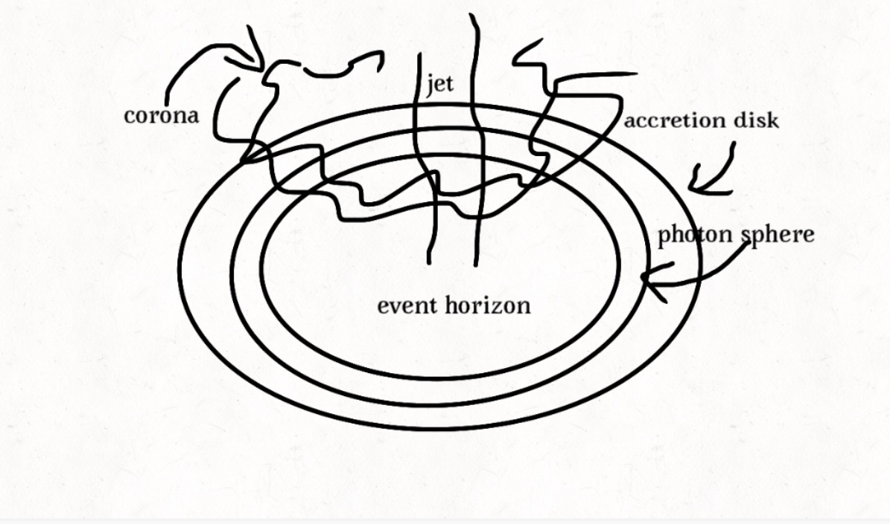

The Black Hole Environment
· Black Hole Formation
Steller mass: 3 to 100 solar masses, produced at the end stages of a star's life, black hole is what remains after a star is unable to resist gravity and collapses inwards. A stellar mass black hole is the most commonly seen type in galaxies. This type of black hole could stay isolated or wandering around the universe with its companion star: the massive star explode violently throwing the black hole out of its original orbit, or the kick is small leaving the black hole still staying in its orbit,' eating' the nearby companion.
Intermediate mass: 100 to 100000 solar masses. Direct formation: in the early years of the universe, stars could become much larger than they are today, sometimes containing upwards of hundreds of solar masses. When such huge stars run out of fuel, they can directly collapse into intermediate mass black holes. Runaway formation: happens in dense cluster regions, when these stars are too close to each other, they begin to merge. The new star will have even stronger gravity and the cycle will continue, allowing this object to grow and grow, until the gravity is so strong, the supermassive star is forced to collapse to make an intermediate mass black hole.
Supermassive black hole: mass: over 100000 solar masses, can be found in the center of galaxies, accretion process of a supermassive black hole is responsible for powering the active galactic nucleus and quasars(reason for the presence of high luminosity of compact galaxy's center). The formation of supermassive black holes is still unknown but there are some hypotheses, one of which is that those kinds of black holes arose very early in the universe and kept on merging or feeding on materials.
accretion process of a supermassive black hole is responsible for powering the active galactic nucleus and quasars(reason for the presence of high luminosity of compact galaxy's center). The formation of supermassive black holes is still unknown but there are some hypotheses, one of which is that those kinds of black holes arose very early in the universe and kept on merging or feeding on materials.
· Black Hole With Companion
X-ray binaries: containing a star and a compact object consuming the companion, the compact object could be a black hole or a neutron star.
classification: based on the companion star instead of the property of black hole itself, the reason for choosing companion star as classification: first, observation is more dramatic; second, rate of mass transfer with orbital period greatly impacted by the type of the companion(for instance, the smaller companion star is closer to the compact object, the orbital period is smaller)high mass x-ray binary: the companion star has at least 10 times more massive than the sun; low mass x-ray binary: companion star has the same mass of the sun or smaller.
Mass transfer mechanism: any material inside of Roche lobe is bound to that star, at Lagrange point,  the potential is equal between two stars(best positions to place the telescope as they can hover at the point with less fuel)
Filling the Roche lobe: As the star gets older, the size of the star will grow larger, as a consequence, it will fill its Roche lobe, with materials of that star beyond the Roche lobe, it will be pulled due to gravitational force to the black hole. Or with time goes by, the binary system will be more compact resulting in the shrink of the Roche lobe.
Wind fed: only limit to high mass x-ray binary systems. Strong stellar winds of companion star captured by the gravity of black hole and fall inwards to event horizon(eg: Cygnus x-1 is a system with a high mass companion that is both overflowing its Roche lobe and feeding black hole with stellar winds)
The falling material: Accretion: the process of how black holes are fed. When the material flow to the accretion disk, a cloud of particles around the black hole experience gravitational force, they accelerate towards the black hole. Particles free to move cause friction due to collision of nearby particles(viscosity).
viscosity does two things: slow down the particles allowing them to fall further to gravitational well; heats up particles causes black body radiation. Since those particles are pulled inwards to the gravitational well, they lose gravitational potential energy and kinetic energy, converting to thermal energy.
· "Hot" Environment
The different name we call a supermassive black hole depends on the point of view of seeing the black hole.
Looking from the edge of the disc -> radio galaxy; looking off the jet but from an angle where the inner part of the accretion disc is visible -> radio-loud quasar; looking at a super black hole without a jet -> Seyfert galaxy; looking directly down the jet -> blazar
Zooming in, let's see the structures: astrophysical jets: a cone-like structure that originates from the area of its rotational axis, one of the largest visible structures of black holes, thought to be powered by material falling onto the black hole, it can funnel material away from the black hole. Why it's so bright? theories suggest that they're either an electrically neutral combination of electrons, atomic nuclei, and positrons or a positron-electron plasma... Jets are not coming from the black hole itself. When the greatly accelerated matter in the beam approaches the speed of light, astrophysical jets become relativistic jets as they show effects from special relativity(Wikipedia). The relativistic jet may offset from the spin axis, this slight offset jet can be observed as a wobble or a lighthouse effect. When will the particles falling closer to the gravitational well be pushed outwards? we need to introduce the Eddington limit: luminosity of infalling material > Eddington limit. When particles move towards the center, gravitational potential energy converts to kinetic energy, infalling particles have to go somewhere and the energy converts to heat, it's so hot that produces enough light to push back against infalling material. The Force of gravity pulling material inwards is equal to the pressure pushing the material outward is Eddington limit.
Corona: a cloud of fast-moving electrons hang out near the black hole. Models: lamp-post model: corona as a source of light that sits close to the rotational poles; sandwich model: corona as a larger cloud that envelope the central disc.
Photon sphere:'ring of fire', some of light emitted from accretion disk can be trapped in circular orbits for a while before escaping, light from flashlight begins traveling in circles, the distance of photon sphere is 1.5 times the radius of the event horizon.
references: images sources are credited on the image.